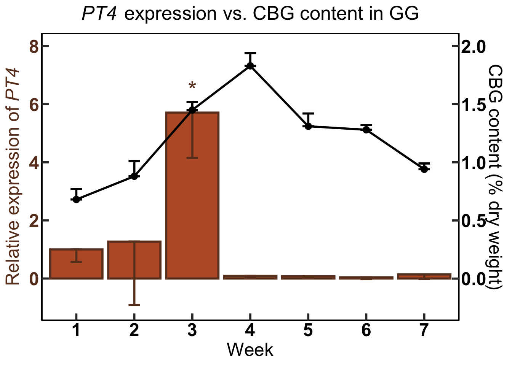
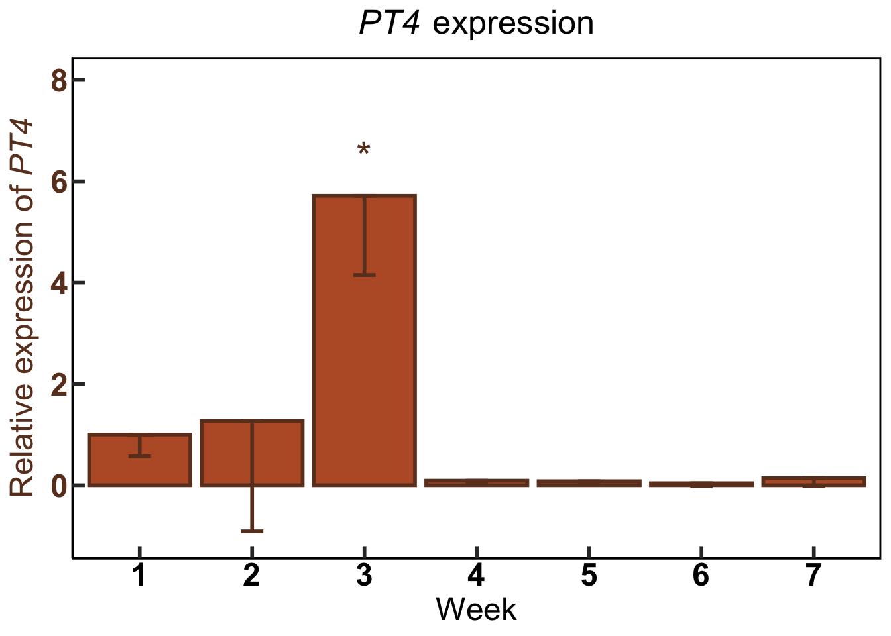
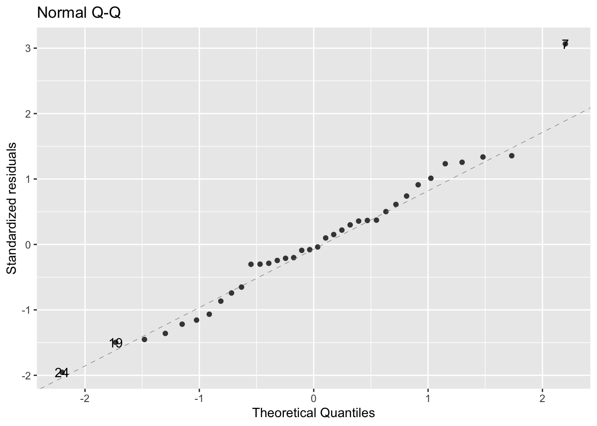
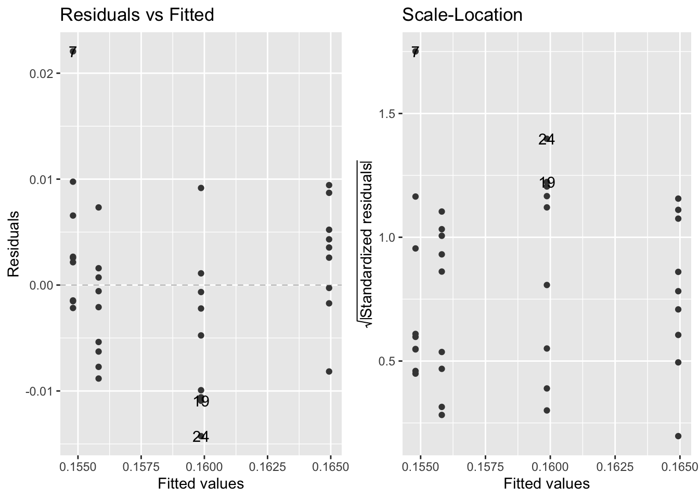
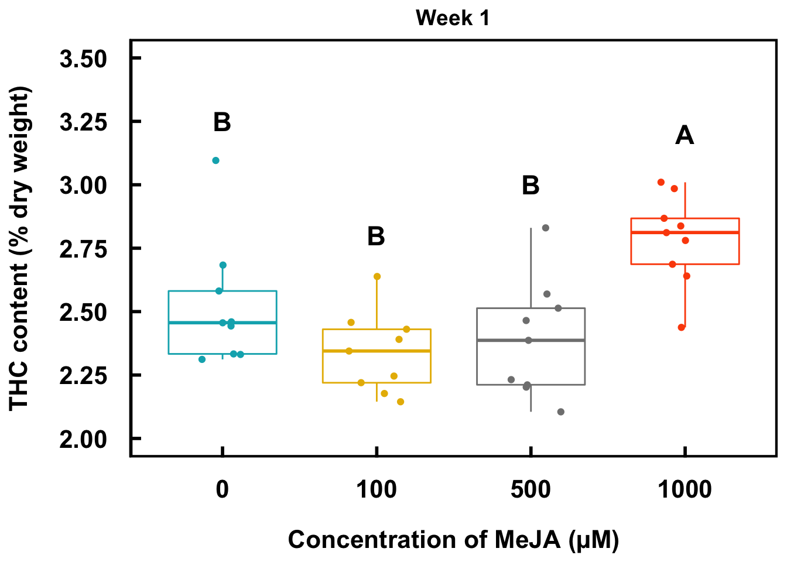
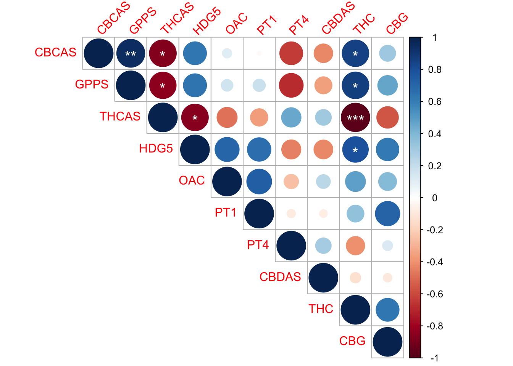
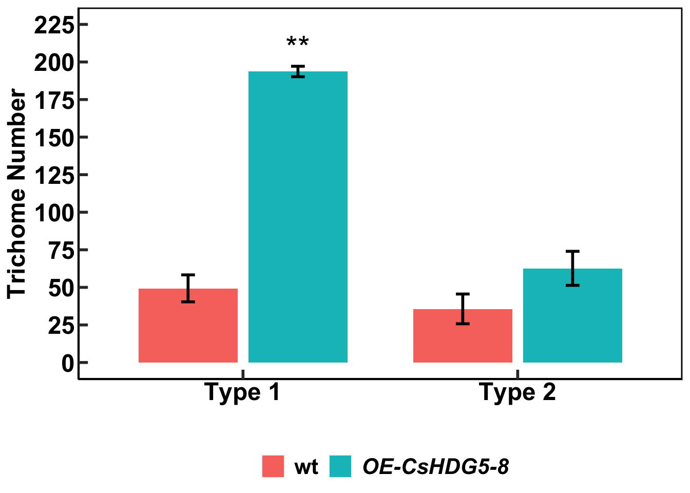
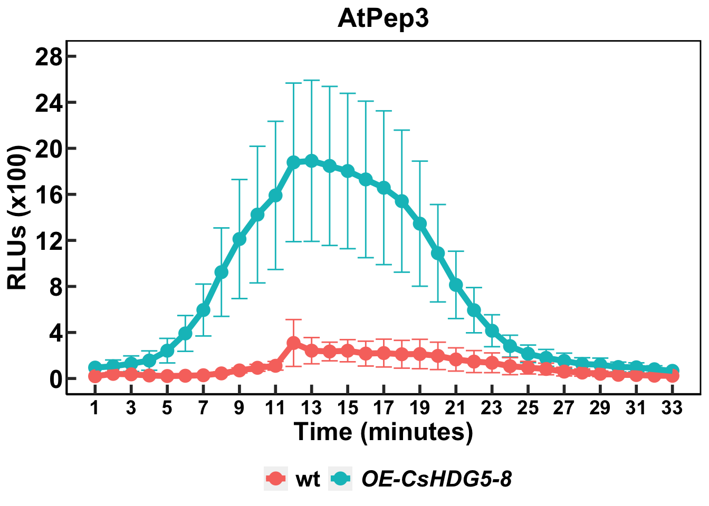
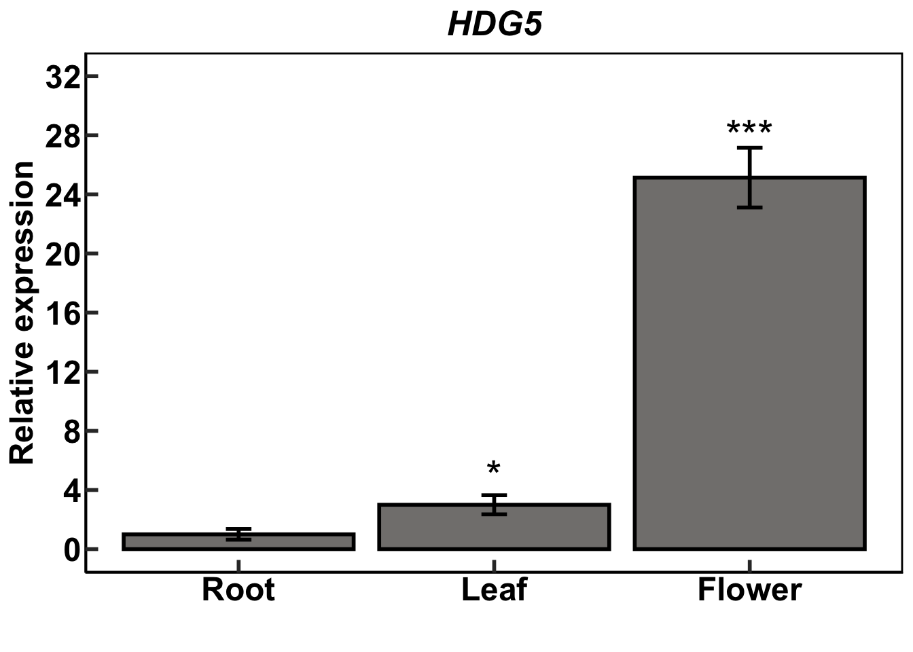

install.packages("dplyr",repos = "https://cran.us.r-project.org")
install.packages("ggplot2",repos = "https://cran.us.r-project.org")
install.packages("tidyverse",repos = "https://cran.us.r-project.org")
install.packages("magrittr",repos = "https://cran.us.r-project.org")1 Introduction
- A major theme in the R statistics community is reproducibility.
- Because many scientists build and use R, many are concerned about the reproducibility crisis in science.
- Therefore, from one angle, the consensus from this community is to transparently share and publish data sources and analysis methodologies.
- I wrote and compiled this document so that Berkowitz lab members (and perhaps others) not only may be able to reproduce the analyses that I did as a graduate student but also inherit what I learned.
- This document is meant to serve as a tutorial for reproducing the analyses that I have performed using the data that I have published.
- Ideally after reading this document, a reader should be able to generate the same types of graphics and analyses using R on new data.
- All data for the following sections are retrieved from my github data repository.
- This document, which was built using Quarto (a type of markdown), initially runs the R code and prints the output per my instructions into an html format.
- The grayed sections preceded and followed by (`) marks are known as code chunks.
- Because these code chunks ran on my computer, they should work on any machine.
- See the Session information section at the end of this document for R version information used to run initially create this document.
- Additionally, if you would like to download the original scripts (.R documents), then you can go to my UConn code repository.
- To efficiently download all the files, click on the green button which says “Code”.
- Next, click “Download ZIP” and all the associated data files will download.
- I categorize the files by which paper I used them for.
- The HDG5 paper refers to the paper that Gang and I are working on (as of 7-19-22), but I may alter this directory name when the paper is eventually published.
- Because these files are located on github, I am able to update the scripts as I see fit.
- If you think there is some kind of code error, please let me know.
1.1 If you are new to R or a beginner user
- I would highly recommend reading Getting Started with R: An introduction for Biologists.
- I read this last year as an intermediate-level R user and it hugely improved my skills.
- I compiled my notes on it which can be found here.
- Another beginner’s text is The New Statistics with R: An Introduction for Biologists
- In this book, the author has fairly strong opinions against the ‘overuse’ of p-values and urges scientists to put more emphasis on confidence intervals and effect sizes in their work. It was very interesting.
- I have also compiled my notes on this book in a document that can be found here.
- In this book, the author has fairly strong opinions against the ‘overuse’ of p-values and urges scientists to put more emphasis on confidence intervals and effect sizes in their work. It was very interesting.
- Additionally, one more text, which I haven’t read in its entirety is R in Action.
- This book goes into much greater detail in certain advanced statistical methods that aren’t covered in the other two books.
- Lastly, whether you are new to R or not, I would highly recommend the use of Quarto (or its predecessor, Rmarkdown) to record the code that you eventually write in an easily transferable format.
2 Dual axis bar/line graph
Install packages:
Load package libraries:
library(dplyr)
library(ggplot2)
library(tidyverse)
library(magrittr)Download data from github repository:
urlfile1="https://raw.githubusercontent.com/apicellap/data/main/CtPharma_GG.csv"
gg_data<-read.csv(url(urlfile1)) #data from CtPharma Gorilla Glue (gene expression & metabolite levels)
urlfile2="https://raw.githubusercontent.com/apicellap/data/main/CW_data_recalc-2.csv"
cw_data<-read.csv(url(urlfile2)) #data from Cherry Wine (gene expression & metabolite levels)View ‘Cherry Wine’ dataframe:
Code
DT::datatable(cw_data,extensions = 'FixedColumns',
options = list(
dom = 't',
scrollX = TRUE,
fixedColumns = TRUE))View ‘Gorilla Glue’ dataframe:
Code
DT::datatable(gg_data,extensions = 'FixedColumns',
options = list(
dom = 't',
scrollX = TRUE,
fixedColumns = TRUE))Manipulate dataframe variables (column names):
# gg_data<-gg_data %>% rename_with( ~ paste0("GG.", .x)) #adds prefix to every column name in dataframe
# cw_data<-cw_data %>% rename_with( ~ paste0("CW.", .x))
gg_data<-rename_with(gg_data, ~ paste0("GG.", .x)) #adds prefix to every column name in dataframe
cw_data<-rename_with(cw_data, ~ paste0("CW.", .x)) View one of the updated dataframes:
Code
DT::datatable(gg_data,extensions = 'FixedColumns',
options = list(
dom = 't',
scrollX = TRUE,
fixedColumns = TRUE))Modify variable representing week in each dataframe to become identical:
names(gg_data)[names(gg_data) == 'GG.week'] <- 'week' #changes name of variable
names(cw_data)[names(cw_data) == 'CW.week'] <- 'week'
intersect(names(gg_data), names(cw_data)) # print common variable among included dataframes[1] "week"Link the two dataframes into one new dataframe:
GG.CW=full_join(gg_data, cw_data)Joining, by = "week"View the new dataframe:
Code
DT::datatable(GG.CW,extensions = 'FixedColumns',
options = list(
dom = 't',
scrollX = TRUE,
fixedColumns = TRUE))Create objects to take on expressions:
Prim.y_title.001 <- expression(paste("Relative expression of ", italic("PT4")))
ggtitle.001 <- expression(paste(italic("PT4"), " expression vs. CBG content in GG"))
ggtitle.002 <- expression(paste(italic("PT4"), " expression"))Plot gene expression in bar chart superimposed with a line graph of the metabolite data:
GG.CBG.PT4<-ggplot(data=GG.CW) + #use dataframe 'GG.CW' in ggplot function
geom_bar(aes(x=week, y=GG.PT4), #geom_bar inherits the dataframe GG.CW
stat="identity", #prevents R from doing new calculations on the data and just present them as they are
fill="#ba5b2f", #color of the fill of the bar - this is a hexcode
color = "#6b3d25", #color of the outline of the bar
size = 1) + #thickness of the outline
geom_errorbar(aes(x=week, #argument is for standard error for the bar chart
ymin=GG.PT4 *1 -GG.PT4.se *1, #minimum for the standard error
ymax=GG.PT4*1, #No error bar in the positive direction
width=.2), #width of the error bar
position = position_dodge(0.9),
color = "#6b3d25", #color of the error bars
size=1.0, #size of the error bar
linetype = 1) + #line style for error bar
geom_line(aes(x=week, #the line for the metabolite data (total CBG in this case)
y=GG.CBG*(4), #the scale on the y axis is multiplied by 4
group=1),
size=1) + #thickness of the line
geom_errorbar(aes(x=week, #error bars for the line
ymin=GG.CBG *4, #this set of error bars does not have a bar in the negative direction
ymax=GG.CBG *4 +GG.CBG.se *4,
width=.2),
position = position_dodge(0.9), color = "black", size=1.0, linetype = 1)+
geom_point(size = 2.75, #size of the data point on the graph
aes(x=week, y=GG.CBG*(4),
group=1)) +
scale_x_discrete(name ="Week", limits=c("1","2","3", "4", "5", "6", "7")) + #Program the exact x axis labels
scale_y_continuous( #program the y axis ticks
limits =c(-1,8), #y axis range
breaks=c(0,2,4,6,8), #tick marks labeled on y axis
name= Prim.y_title.001, #left hand y axis label
sec.axis = sec_axis(~ . *(1/4), #right hand (secondary) y axis scale is reduced by a factor or 0.25
name="CBG content (% dry weight)")) + #secondary y axis label
theme(axis.line.y.right = element_line(color = "black"), #theme elements are pretty self explanatory
axis.title.y.right = element_text(color="black", size = 18),
axis.text.y.right = element_text(color="black", face="bold", size = 18),
axis.line.y.left = element_line(color = "black"),
axis.title.y.left = element_text(color = "#6b3d25", face="bold", size=18),
axis.text.y.left = element_text(color = "#6b3d25", face="bold", size =18),
axis.text.x = element_text(color="black", face="bold", size = 18),
axis.ticks = element_line(size = 1),
axis.ticks.length = unit(-0.25, "cm"),
axis.title.x=element_text(color="black",size=18)) +
theme(
axis.line = element_line(colour = "black"),
panel.border = element_rect(colour = "black", fill=NA, size=1),
panel.grid.major = element_blank(),
panel.grid.minor = element_blank(),
panel.background = element_blank()) +
ggtitle(ggtitle.001) +
theme(plot.title = element_text(face="bold", size=19)) +
xlab("Weeks after Flower Initiation") +
theme(plot.title = element_text(hjust = 0.5)) +
annotate("text", #annotate plot with text
x = 2, #x coordinate for annotation
y = 4, #y coordinate for annotation
label = "", #inscription for the annotation
size = 8, #font size
color = "#6b3d25") + #color of the annotation
annotate("text", x = 3, y = 6.5, label = "*", size = 8, color = "#6b3d25") +
annotate("text", x = 4, y = .5, label = "", size = 8, color = "#6b3d25") +
annotate("text", x = 5, y = .5, label = "", size = 8, color = "#6b3d25") +
annotate("text", x = 6, y =.51, label = "", size = 8, color = "#6b3d25") +
annotate("text", x = 7, y = 1, label = "", size = 8, color = "#6b3d25")
GG.CBG.PT4 #call the name of the plot again to print it 
#Bar chart without the line superimposed:
GG.CBG.PT4<-ggplot(data=GG.CW) + #use dataframe 'GG.CW' in ggplot function
geom_bar(aes(x=week, y=GG.PT4), #geom_bar inherits the dataframe GG.CW
stat="identity", #prevents R from doing new calculations on the data and just present them as they are
fill="#ba5b2f", #color of the fill of the bar - this is a hexcode
color = "#6b3d25", #color of the outline of the bar
size = 1) + #thickness of the outline
geom_errorbar(aes(x=week, #argument is for standard error for the bar chart
ymin=GG.PT4 *1 -GG.PT4.se *1, #minimum for the standard error
ymax=GG.PT4*1, #No error bar in the positive direction
width=.2), #width of the error bar
position = position_dodge(0.9),
color = "#6b3d25", #color of the error bars
size=1.0, #size of the error bar
linetype = 1) + #line style for error bar
scale_x_discrete(name ="Week", limits=c("1","2","3", "4", "5", "6", "7")) + #Program the exact x axis labels
scale_y_continuous( #program the y axis ticks
limits =c(-1,8), #y axis range
breaks=c(0,2,4,6,8), #tick marks labeled on y axis
name= Prim.y_title.001) + #left hand y axis label
theme(axis.line.y.right = element_line(color = "black"), #theme elements are pretty self explanatory
axis.title.y.right = element_text(color="black", size = 18),
axis.text.y.right = element_text(color="black", face="bold", size = 18),
axis.line.y.left = element_line(color = "black"),
axis.title.y.left = element_text(color = "#6b3d25", face="bold", size=18),
axis.text.y.left = element_text(color = "#6b3d25", face="bold", size =18),
axis.text.x = element_text(color="black", face="bold", size = 18),
axis.ticks = element_line(size = 1),
axis.ticks.length = unit(-0.25, "cm"),
axis.title.x=element_text(color="black",size=18)) +
theme(
axis.line = element_line(colour = "black"),
panel.border = element_rect(colour = "black", fill=NA, size=1),
panel.grid.major = element_blank(),
panel.grid.minor = element_blank(),
panel.background = element_blank()) +
ggtitle(ggtitle.002) +
theme(plot.title = element_text(face="bold", size=19)) +
xlab("Weeks after Flower Initiation") +
theme(plot.title = element_text(hjust = 0.5)) +
annotate("text", #annotate plot with text
x = 2, #x coordinate for annotation
y = 4, #y coordinate for annotation
label = "", #inscription for the annotation
size = 8, #font size
color = "#6b3d25") + #color of the annotation
annotate("text", x = 3, y = 6.5, label = "*", size = 8, color = "#6b3d25") +
annotate("text", x = 4, y = .5, label = "", size = 8, color = "#6b3d25") +
annotate("text", x = 5, y = .5, label = "", size = 8, color = "#6b3d25") +
annotate("text", x = 6, y =.51, label = "", size = 8, color = "#6b3d25") +
annotate("text", x = 7, y = 1, label = "", size = 8, color = "#6b3d25")
GG.CBG.PT4 #call the name of the plot again to print it 
3 Analysis of variance
install.packages("agricolae",repos = "https://cran.us.r-project.org")
install.packages("ggfortify",repos = "https://cran.us.r-project.org")library(agricolae)
library(ggfortify)Download data from the CtPharma experiment with methyl jasmonate applications on ‘White Tangy Haze’ plants:
urlfile3="https://raw.githubusercontent.com/apicellap/data/main/CtPharma_dwt.csv"
MJ<-read.csv(url(urlfile3))
names(MJ) #print column names (variables)[1] "ID" "SAMPLE" "X.DWT" "CONC" "METAB" "WEEK" Modify name of one variable for percent weight of metabolite:
names(MJ)[names(MJ) == 'X.DWT'] <- 'perc.dwt' #changes name of variable
names(MJ) [1] "ID" "SAMPLE" "perc.dwt" "CONC" "METAB" "WEEK" Create new column to encompass decimal form of percentage:
MJ$dec.dwt <- (MJ$perc.dwt/100)Arcsin transformation of decimal-form data:
MJ$ASin <-asin(sqrt(MJ$dec.dwt))
head(MJ) #display top six rows of the dataframe ID SAMPLE perc.dwt CONC METAB WEEK dec.dwt ASin
1 1 10-1A 2.581322 0 THC 1 0.02581322 0.1613643
2 2 10-2A 2.456230 0 THC 1 0.02456230 0.1573724
3 3 10-3A 2.331155 0 THC 1 0.02331155 0.1532807
4 4 11-1A 2.311758 0 THC 1 0.02311758 0.1526367
5 5 11-2A 2.333276 0 THC 1 0.02333276 0.1533510
6 6 11-3A 2.683677 0 THC 1 0.02683677 0.1645610Subset data into further subsetted dataframes:
THC <- subset(MJ, METAB=="THC") #create new dataframe, THC, when METAB is THC
THC_wk1 <- subset(THC, WEEK=="1") #subset the THC dataframe into new dataframe to isolate the timeframe Create model and perform ANOVA:
mod1 <- lm(ASin ~ CONC, THC_wk1) #create linear model of the data (one way ANOVA design)
summary(mod1) #perform ANOVA
Call:
lm(formula = ASin ~ CONC, data = THC_wk1)
Residuals:
Min 1Q Median 3Q Max
-0.0142617 -0.0049097 -0.0004251 0.0037375 0.0220615
Coefficients:
Estimate Std. Error t value Pr(>|t|)
(Intercept) 1.548e-01 1.760e-03 87.94 < 2e-16 ***
CONC 1.013e-05 3.136e-06 3.23 0.00274 **
---
Signif. codes: 0 '***' 0.001 '**' 0.01 '*' 0.05 '.' 0.1 ' ' 1
Residual standard error: 0.007409 on 34 degrees of freedom
Multiple R-squared: 0.2349, Adjusted R-squared: 0.2123
F-statistic: 10.44 on 1 and 34 DF, p-value: 0.002742Check assumption that the data are normally distributed:
MJ$CONC <- as.factor(MJ$CONC)
autoplot(mod1, which = c(2), ncol=1, smooth.colour = NA)
The assumption of normality appears to be met
Check assumption of equal variance (among groups):
autoplot(mod1, which = c(1,3), ncol=2, smooth.colour = NA)Warning: Removed 36 row(s) containing missing values (geom_path).
Removed 36 row(s) containing missing values (geom_path).
This assumption appears to be met.
Perform Fisher’s LSD test:
lsd1 <- LSD.test(mod1, "CONC", group=TRUE)
lsd1 #see $groups section $statistics
MSerror Df Mean CV t.value LSD
5.488752e-05 34 0.1588556 4.66374 2.032245 0.007097518
$parameters
test p.ajusted name.t ntr alpha
Fisher-LSD none CONC 4 0.05
$means
ASin std r LCL UCL Min Max Q25
0 0.1593182 0.007656683 9 0.1542995 0.1643369 0.1526367 0.1768644 0.1533510
100 0.1534571 0.005211354 9 0.1484384 0.1584758 0.1469889 0.1631459 0.1495377
500 0.1550842 0.007421761 9 0.1500655 0.1601029 0.1456070 0.1690349 0.1492697
1000 0.1675628 0.005448446 9 0.1625441 0.1725815 0.1567742 0.1743687 0.1646615
Q50 Q75
0 0.1573724 0.1613643
100 0.1537304 0.1565335
500 0.1551142 0.1592098
1000 0.1684787 0.1701574
$comparison
NULL
$groups
ASin groups
1000 0.1675628 a
0 0.1593182 b
500 0.1550842 b
100 0.1534571 b
attr(,"class")
[1] "group"Housekeeping for dataframes:
lsd_thc.wk1 <- lsd1$groups #create new dataframe that encapsulates the LSD output
CONC <- as.list(c(1000,0,500,100))
lsd_thc.wk1$CONC <- CONC #create new column that will inherit the list, 'CONC'
lsd_thc.wk1$CONC <- as.numeric(lsd_thc.wk1$CONC) #coerce the variable CONC to be numeric so that it can be sorted numerically
lsd_thc.wk1 <- arrange(lsd_thc.wk1, CONC) #arrange the dataframe by CONC by least to greatest value
lsd_thc.wk1 %>% mutate_if(is.character, str_to_upper) -> lsd_thc.wk1 #change any character in the dataframe to uppercase
lsd_thc.wk1 ASin groups CONC
0 0.1593182 B 0
100 0.1534571 B 100
500 0.1550842 B 500
1000 0.1675628 A 10004 Boxplots
This section aims to plot the metabolite (in this case, THC) data in boxplots together with the Fisher’s LSD output from the model, mod1.
install.packages("ggpubr",repos = "https://cran.us.r-project.org")library(ggpubr)Create some objects to feed into code for the boxplot:
colors <- c("#00AFBB","#E7B800", "#808080", "#FC4E07") #hexcodes for colors of boxplots
names(colors) = unique(THC_wk1$CONC) #gives names to the colors w1THC <-ggboxplot(THC_wk1, x = "CONC", y = "perc.dwt",
color = "CONC", #assign colors to the CONC variable
palette = colors, #use the object created in the previous code chunk
add = "jitter", #adds random noise into the datapoints so that they disperse randomly
xlab = "Concentration of MeJA (µM)" ,
ylab = "THC content (% dry weight)",
title = "Week 1",
ylim = c(2,3.5), #y axis range
yticks.by = 0.25, #y axis tick increment
legend.title = "Concentration (µM)") + rremove("legend") +
theme(plot.title = element_text(size= 14, hjust = 0.5, family = "Arial", face = "bold")) +
theme(
panel.border = element_rect(colour = "black", fill=NA, size=1.5),
axis.ticks = element_line(size = 1),
axis.ticks.length = unit(-0.25, "cm"),
axis.line.x = element_blank(),
axis.line.y = element_blank(),
axis.line.y.left = element_line(color = "black"),
axis.title.y.left = element_text(color="black", face="bold", size = 16, family = "Arial"),
axis.text.y.left = element_text(color="black", face="bold", size = 16, family = "Arial",margin=unit(c(0.5,0.5,0.5,0.5), "cm")),
axis.text.x = element_text(color="black", face="bold", size = 16, family = "Arial", margin=unit(c(0.5,0.5,0.5,0.5), "cm")),
axis.title.x=element_text(color="black", face="bold",size = 16, family = "Arial")) +
annotate("text", #annotate the plot with text
x = 1:4, #respective x coordinate for each label
y = c(3.25,2.8,3,3.2), #respective y coordinate for each label
label = lsd_thc.wk1$groups, #list of labels to corresponding to x positions 1:4
size = 6, #font size
fontface = "bold")
w1THC
# ggsave("THC-plot.jpeg", device = "jpeg", units="in", width=6, height=5, dpi=300) - code for saving the plot 5 Pearson’s Correlation Matrix
install.packages("corrplot",repos = "https://cran.us.r-project.org")
install.packages("Hmisc",repos = "https://cran.us.r-project.org")library(corrplot)
library(Hmisc)Download gene expression and metabolite data for the CtPharma experiment on ‘Gorilla Glue’ (GG):
urlfile4="https://raw.githubusercontent.com/apicellap/data/main/CtPharma_age_corr.csv"
GG_mat<-read.csv(url(urlfile4)) #data from CtPharma Gorilla Glue (gene expression & metabolite levels)
head(GG_mat) week CBCAS GPPS THCAS HDG5 OAC PT1 PT4 CBDAS CBG THC
1 1 1.00 1.00 1.00 1.00 1.00 1.00 1.00000000 1.00 0.50 2.10000
2 2 5.18 3.34 0.98 2.39 1.07 0.07 1.26605554 1.01 0.86 4.40000
3 3 0.93 0.30 0.78 2.40 1.40 8.48 5.71349323 1.28 1.45 8.73250
4 4 8.57 12.09 0.53 5.13 2.25 24.14 0.08681681 1.11 1.80 16.56500
5 5 12.09 9.12 0.23 8.26 3.34 20.33 0.08384901 0.79 1.31 21.47750
6 6 20.72 16.84 0.24 5.13 0.62 0.12 0.04156684 0.49 1.28 23.24841
Note
Data in this dataframe were pre-calculated in excel when I was a graduate student. However, the general rule of thumb is to input the original dataframe into R and perform all data wrangling and calculations through code.
Dataframe modifications:
names(GG_mat)[names(GG_mat) == 'THC'] <- 'perc.THC' #changes name of variable
names(GG_mat)[names(GG_mat) == 'CBG'] <- 'perc.CBG'
GG_mat$dec.THC <- (GG_mat$perc.THC/100) #creates new column where percentage is converted to decimal
GG_mat$dec.CBG <- (GG_mat$perc.CBG/100)
GG_mat$THC <-asin(sqrt(GG_mat$dec.THC)) #arcsin transformation calculation
GG_mat$CBG<-asin(sqrt(GG_mat$dec.CBG))
head(GG_mat) week CBCAS GPPS THCAS HDG5 OAC PT1 PT4 CBDAS perc.CBG perc.THC
1 1 1.00 1.00 1.00 1.00 1.00 1.00 1.00000000 1.00 0.50 2.10000
2 2 5.18 3.34 0.98 2.39 1.07 0.07 1.26605554 1.01 0.86 4.40000
3 3 0.93 0.30 0.78 2.40 1.40 8.48 5.71349323 1.28 1.45 8.73250
4 4 8.57 12.09 0.53 5.13 2.25 24.14 0.08681681 1.11 1.80 16.56500
5 5 12.09 9.12 0.23 8.26 3.34 20.33 0.08384901 0.79 1.31 21.47750
6 6 20.72 16.84 0.24 5.13 0.62 0.12 0.04156684 0.49 1.28 23.24841
dec.THC dec.CBG THC CBG
1 0.0210000 0.0050 0.1454258 0.07076974
2 0.0440000 0.0086 0.2113313 0.09286962
3 0.0873250 0.0145 0.2999873 0.12070887
4 0.1656500 0.0180 0.4191687 0.13456987
5 0.2147750 0.0131 0.4818713 0.11470661
6 0.2324841 0.0128 0.5031255 0.11337985x <- subset(GG_mat, select = c(2:9, 14:15))
GGcor <-rcorr(as.matrix(x))
GGcor CBCAS GPPS THCAS HDG5 OAC PT1 PT4 CBDAS THC CBG
CBCAS 1.00 0.94 -0.87 0.64 0.11 -0.02 -0.63 -0.42 0.85 0.31
GPPS 0.94 1.00 -0.85 0.64 0.17 0.18 -0.68 -0.35 0.86 0.46
THCAS -0.87 -0.85 1.00 -0.86 -0.49 -0.36 0.46 0.30 -0.97 -0.56
HDG5 0.64 0.64 -0.86 1.00 0.70 0.66 -0.44 -0.43 0.79 0.61
OAC 0.11 0.17 -0.49 0.70 1.00 0.74 -0.25 0.23 0.48 0.39
PT1 -0.02 0.18 -0.36 0.66 0.74 1.00 -0.09 -0.08 0.35 0.72
PT4 -0.63 -0.68 0.46 -0.44 -0.25 -0.09 1.00 0.29 -0.41 0.12
CBDAS -0.42 -0.35 0.30 -0.43 0.23 -0.08 0.29 1.00 -0.13 -0.09
THC 0.85 0.86 -0.97 0.79 0.48 0.35 -0.41 -0.13 1.00 0.63
CBG 0.31 0.46 -0.56 0.61 0.39 0.72 0.12 -0.09 0.63 1.00
n= 7
P
CBCAS GPPS THCAS HDG5 OAC PT1 PT4 CBDAS THC CBG
CBCAS 0.0015 0.0118 0.1243 0.8169 0.9629 0.1269 0.3465 0.0146 0.4954
GPPS 0.0015 0.0165 0.1194 0.7210 0.6935 0.0900 0.4349 0.0130 0.2934
THCAS 0.0118 0.0165 0.0135 0.2645 0.4215 0.3036 0.5076 0.0002 0.1895
HDG5 0.1243 0.1194 0.0135 0.0798 0.1043 0.3190 0.3364 0.0344 0.1438
OAC 0.8169 0.7210 0.2645 0.0798 0.0579 0.5845 0.6156 0.2722 0.3885
PT1 0.9629 0.6935 0.4215 0.1043 0.0579 0.8537 0.8727 0.4453 0.0707
PT4 0.1269 0.0900 0.3036 0.3190 0.5845 0.8537 0.5233 0.3618 0.7926
CBDAS 0.3465 0.4349 0.5076 0.3364 0.6156 0.8727 0.5233 0.7752 0.8453
THC 0.0146 0.0130 0.0002 0.0344 0.2722 0.4453 0.3618 0.7752 0.1260
CBG 0.4954 0.2934 0.1895 0.1438 0.3885 0.0707 0.7926 0.8453 0.1260 #tiff(file="GG_arcsin-matrix.tiff",
# width=6, height=4, units="in", res=200)
GGcor$P[is.na(GGcor$P)]<-1
corrplot(GGcor$r, #strength of correlation (info for size and color of circle)
method="circle", #each correlation represented by a circle
type="upper", #orientation of plot (upper portion of the diagnonal)
p.mat=GGcor$P, #p values for correlation, is the correlation a statistically significant, if so, then how significant?
insig="label_sig", #when there isn't a significant correlation
pch.col="white", #color of symbol
sig.level = c(.001,.01,.05), #p value cutoff points
pch.cex=1.25, #size of symbol
tl.srt = 45) #tilt labels above graph at a 45˚ angle 
#dev.off()6 Bar plot with two variables
Download data file that concerns types of trichomes and their densities in wild type and mutant tobacco leaves:
urlfile5="https://raw.githubusercontent.com/apicellap/data/main/tri_count.csv"
tri_ct<-read.csv(url(urlfile5))
head(tri_ct) tissue tri_type count
1 ctl 1 62
2 ctl 1 32
3 ctl 1 54
4 ctl 2 54
5 ctl 2 20
6 ctl 2 33tri_mean<-summarise(
group_by(tri_ct, tissue, tri_type, .groups = TRUE),
obs = n(), #counts the number of observations by group
Mcount = mean(count), #
SEcount =(sd(count))/sqrt(obs)) #calculate standard error for each group`summarise()` has grouped output by 'tissue', 'tri_type'. You can override
using the `.groups` argument.tri_mean# A tibble: 4 × 6
# Groups: tissue, tri_type [4]
tissue tri_type .groups obs Mcount SEcount
<chr> <int> <lgl> <int> <dbl> <dbl>
1 ctl 1 TRUE 3 49.3 8.97
2 ctl 2 TRUE 3 35.7 9.91
3 oe_hdg5-8 1 TRUE 3 194. 3.48
4 oe_hdg5-8 2 TRUE 3 62.7 11.3 Data modifications and objects:
tri_mean$tri_type <- as.factor(tri_mean$tri_type) #coerce tri_type variable into a factor
type1 <- filter(tri_ct, tri_type == "1") #subset the data
type2 <- filter(tri_ct, tri_type == "2")
geneA <- expression(paste(bold("wt")))
geneB <- expression(paste(bolditalic("OE-CsHDG5-8")))Plot the data in a bar plot (geom_col() is used):
p<-ggplot(data = tri_mean,
aes(x = tri_type,
y=Mcount,
fill= tissue)) + #add color by tissue variable which refers to ctl (wt) or oe_hdg5-8
geom_col(width = 0.8, position = position_dodge2(1), show.legend = TRUE) + #another form of bar plot (col or column plot)
geom_errorbar(aes(x = tri_type, ymin = Mcount - SEcount, ymax = Mcount + SEcount, width=0.1),
position = position_dodge(width=.8), color="black", size=1.0, linetype = 1) +
scale_fill_discrete(name = "", labels = c(geneA, geneB)) + #modify the labels titles in the legend
ylab("Trichome Number") +
xlab("") +
scale_x_discrete(limits = c("1", "2"), #refers to data in the dataframe
labels = c("Type 1", "Type 2")) + #modify the labels on the x axis respectively for the limits
scale_y_continuous(
limits = c(0,225), #y axis range
breaks=seq(0,225, by = 25)) + #in this y axis range, increments increase by 25
theme(
axis.line.y.left = element_line(color = "black"), #color of left axis line
axis.title.y.left = element_text(color="black", face="bold", size=18), #color, face, and size of y axis title
axis.text.y.left = element_text(color="black", face="bold", size =18), #color, face, and size of y axis values
axis.text.x = element_text(color="black", face="bold", size = 18), #color, face, and size of y axis values
axis.ticks = element_line(size = 1), #size of tick on x and y axes
axis.ticks.length = unit(-0.25, "cm"), #makes ticks go inside the plot
axis.title.x=element_text(color="black",size=18), #color, size of x axis title (not included)
plot.title = element_text(face="bold", size=19, hjust = 0.5),
plot.caption = element_text(size=12.5, colour ="red"),
plot.tag = element_text(color="black",face = "bold", size=18),
axis.line = element_line(colour = "black"),
legend.position = "bottom",
legend.title = element_text(size = 14, face ="bold"),
legend.text = element_text(size = 16, face ="bold"),
panel.border = element_rect(colour = "black", fill=NA, size=1),
panel.grid.minor = element_blank(),
panel.background = element_blank()) +
annotate("text", x =1.2, y = 210, label = "**", size = 8)
p
7 Data cleaning
Download data on Reactive oxygen species (ros) generation:
urlfile6="https://raw.githubusercontent.com/apicellap/data/main/nasty_ros.csv"
nas_ros<-read.csv(url(urlfile6)) View dataframe:
Code
DT::datatable(nas_ros,extensions = 'FixedColumns',
options = list(
dom = 't',
scrollX = TRUE,
fixedColumns = TRUE))- This dataset, which Gang Ma provided to me, has a wide format.
- It also possesses characteristics of what is known as ‘untidy’ data.
- There is nothing inherently wrong with this spreadsheet is set up.
- However, R will be unable to read the data.
- Therefore, it must be ‘cleaned’ and converted into a long format through multiple steps.
- Additionally, it is highly recommended to not modify an original spreadsheet.
- Instead, the spreadsheet can be reproduced in R and modified as an R dataframe.
- R also has the benefit of automating many time consuming aspects of data cleaning.
- Instead, the spreadsheet can be reproduced in R and modified as an R dataframe.
- The following code chunk is by no means a one-sized fits all approach and there is no one way to accomplish this.
- I just try to keep things simple and choose the path of least resistance when I do anything in R.
Subset two elements of the wide-formatted data frame:
wt <- select(nas_ros, 1:7,20) #isolate columns associated with wild type data in one dataframe
trt <- select(nas_ros, 1,11:16,20) Clean the wt dataframe:
wt <- gather(wt,
arb, #new variable that will encompass the former column names (this variable is not important going forward)
ros, #new variable that will encompass the data under the former column names
2:7, #perform this function in columns 2-7
na.rm = FALSE, convert = FALSE)
wt <- select(wt, X, sec, ros) #modify wt such that arb is not included in new version of dataframe
names(wt)[names(wt) == 'X'] <- 'cycle' #changes name of variable
names(wt)[names(wt) == 'wt'] <- 'ros' #changes name of variable
wt$treat <- "wt" #create new variable in dataframe and add the value in quotes to every observation
head(wt) #display top six rows of data cycle sec ros treat
1 cycle 1 0 32 wt
2 cycle 2 107 80 wt
3 cycle 3 214 43 wt
4 cycle 4 321 15 wt
5 cycle 5 428 16 wt
6 cycle 6 535 38 wtClean the trt dataframe:
trt <- gather(trt, arb, ros,2:7,na.rm = FALSE, convert = FALSE)
names(trt)[names(trt) == 'X'] <- 'cycle' #changes name of variable
names(trt)[names(trt) == 'trt'] <- 'ros' #changes name of variable
trt <- select(trt, cycle, ros, sec)
trt$treat <- "trt"
head(trt) cycle ros sec treat
1 cycle 1 6 0 trt
2 cycle 2 8 107 trt
3 cycle 3 2 214 trt
4 cycle 4 30 321 trt
5 cycle 5 115 428 trt
6 cycle 6 257 535 trtCombine the two cleaned dataframes into one:
tidyros<-rbind(wt, trt) #combine the rows of two dataframes that share identical column names into new dataframe
tidyros$sec <- as.numeric(tidyros$sec) #coerce variable into being numeric
tidyros <- filter(tidyros, sec <= 3424) #filter dataframe to observations that occured before 3424 seconds
tidyros$min <- tidyros$sec/60 #create new column that converts seconds to minutes
tidyros <-tidyros %>% mutate(across(starts_with("min"), round, 1)) #modify observations in min column to have one decimal place
tidyros$min <- as.factor(tidyros$min) #coerce variable 'min' into being a factor
head(tidyros) cycle sec ros treat min
1 cycle 1 0 32 wt 0
2 cycle 2 107 80 wt 1.8
3 cycle 3 214 43 wt 3.6
4 cycle 4 321 15 wt 5.3
5 cycle 5 428 16 wt 7.1
6 cycle 6 535 38 wt 8.9Summarize the newly reformatted dataframe, tidyros:
sum <- tidyros %>%
group_by(cycle, treat, min, .groups = TRUE) %>% #define which groups' statistics will be calculated
summarise(
obs = n(), #count the number of observations in each group
meanT = mean(ros), #calculate the mean for each group
se = (sd(ros)/sqrt(obs))) #calculate the standard error of the mean for each group`summarise()` has grouped output by 'cycle', 'treat', 'min'. You can override
using the `.groups` argument.head(sum)# A tibble: 6 × 7
# Groups: cycle, treat, min [6]
cycle treat min .groups obs meanT se
<chr> <chr> <fct> <lgl> <int> <dbl> <dbl>
1 cycle 1 trt 0 TRUE 6 94.7 47.3
2 cycle 1 wt 0 TRUE 6 19.8 5.08
3 cycle 10 trt 16 TRUE 6 1424. 594.
4 cycle 10 wt 16 TRUE 6 93 30.1
5 cycle 11 trt 17.8 TRUE 6 1591 644.
6 cycle 11 wt 17.8 TRUE 6 110. 37.6 Reformat summary statistics dataframe:
sum <- select(sum, 1:3,5:7) #select specific columns to go into new version of sum dataframe
sum$min <- as.numeric(sum$min) #coerce min variable to be numeric
sum <- sum %>% mutate(across(starts_with("min"), round, 2)) #round min variable observations to two digits
sum <- arrange(sum, by_group = treat) #arrange table by treat variable
sum$treat <- gsub("trt","OE-CsHDG5-8", sum$treat) #in treat variable, change observations from "trt" to "OE-CsHDG5-8"
sum$treat <- as.factor(sum$treat)
sum <- mutate(sum,treat = relevel(treat, ref = "wt")) #coerce wt into the reference level
sum$meanT <- sum$meanT/100 #scale mean values down by 100
sum$se <- sum$se/100 #scale standard error of the mean down by 100
head(sum)# A tibble: 6 × 6
# Groups: cycle, treat, min [6]
cycle treat min obs meanT se
<chr> <fct> <dbl> <int> <dbl> <dbl>
1 cycle 1 OE-CsHDG5-8 1 6 0.947 0.473
2 cycle 10 OE-CsHDG5-8 10 6 14.2 5.94
3 cycle 11 OE-CsHDG5-8 11 6 15.9 6.44
4 cycle 12 OE-CsHDG5-8 12 6 18.8 6.89
5 cycle 13 OE-CsHDG5-8 13 6 18.9 7.00
6 cycle 14 OE-CsHDG5-8 14 6 18.5 6.91 8 Line graph
Create some objects for the figure:
geneA <- expression(paste(bold("wt")))
geneB <- expression(paste(bolditalic("OE-CsHDG5-8")))rosline <- ggplot(sum, aes(x = min, y = meanT, color = treat)) +
geom_errorbar(aes(x = min, ymin = meanT - se, ymax = meanT + se)) +
geom_point(size =4) +
geom_line(mapping = aes(x=min, y = meanT, color = treat), size =2) +
ylab("RLUs (x100)") +
xlab("Time (minutes)") +
ggtitle("AtPep3") +
scale_fill_continuous(name = "", labels = c(geneA, geneB)) +
scale_x_continuous(limits = c(1,33),
breaks = seq(1, 33, by = 2)) +
scale_y_continuous(limits = c(0,28),
breaks = seq(0,28, by = 4)) +
scale_color_hue(labels = c(geneA, geneB)) +
theme(
axis.line.y.left = element_line(color = "black"),
axis.title.y.left = element_text(color="black", face="bold", size=18),
axis.text.y.left = element_text(color="black", face="bold", size =18),
axis.text.x = element_text(color="black", face="bold", size =14, vjust=0.5), #
axis.ticks = element_line(size = 1), #size of tick on x and y axes
axis.ticks.length = unit(-0.25, "cm"), #makes ticks go inside the plot
axis.title.x=element_text(color="black",face = "bold", size=18, vjust =0.6),
plot.title = element_text(face="bold", size=19, hjust = 0.5),
plot.caption = element_text(size=12.5, colour ="red"),
plot.tag = element_text(color="black",face = "bold", size=18),
axis.line = element_line(colour = "black"),
legend.position = "bottom",
legend.title = element_blank(),
legend.text = element_text(size = 16, face ="bold"),
panel.border = element_rect(colour = "black", fill=NA, size=1),
panel.grid.minor = element_blank(),
panel.background = element_blank())
rosline
9 qPCR data analysis in R
Download raw qPCR Cq values:
urlfile7="https://raw.githubusercontent.com/apicellap/data/main/hd1_tissuetype_raw.csv"
hd1<-read.csv(url(urlfile7))
head(hd1) Sample tissue target_gene housekeeping_gene target_mean_ct hk_mean_ct
1 1 flower HD1 ubiquitin 30.34 30.6
2 5 flower HD1 ubiquitin 30.13 30.8
3 9 flower HD1 ubiquitin 30.71 31.0
4 13 flower HD1 ubiquitin 29.62 30.3
5 2 leaf HD1 ubiquitin 33.63 31.5
6 6 leaf HD1 ubiquitin 33.61 31.6
Expand to see my note about reproducing this example.
While this example is meant to be one that is reproducible, it is of particular importance with this example that the dataframe be set up in exactly the way I have laid it out for the following code to work correctly. See the dataframe at its location within my github repo. Any changes to the the dataframe must be reflected in downstream code.
First step of qPCR calculations (for standard errors)
ref_df<-filter(hd1, tissue == "root") #subset tissue by root (this is the arbitrary reference) to isolate and do calculations on its mean ct values
Gmean_ct_target <- mean(ref_df$target_mean_ct) #calculates means of the mean ct values in the target gene
Gmean_ct_hk <- mean(ref_df$hk_mean_ct) #calculates means of the mean ct values in the housekeeping gene
ref_val <- Gmean_ct_target -Gmean_ct_hk #calculate the reference ∆ct value
ref_val[1] 4.176667hd1$delta_ct <- (hd1$target_mean_ct - hd1$hk_mean_ct) #create new column for ∆ct to contain the newly calculated values
hd1$delta_delta_ct <- (hd1$delta_ct - ref_val) #create new column for ∆∆ct to contain the newly calculated values
hd1$expression <- (2^-hd1$delta_delta_ct) #calculate the expression data View dataframe:
Code
DT::datatable(hd1,extensions = 'FixedColumns',
options = list(
dom = 't',
scrollX = TRUE,
fixedColumns = TRUE))table1<-summarise(
group_by(hd1, tissue),
obs = n(),
mean = mean(expression),
SE =(sd(expression))/sqrt(obs)) #multiple statistics can be calculated within summarise
table1# A tibble: 3 × 4
tissue obs mean SE
<chr> <int> <dbl> <dbl>
1 flower 4 25.4 2.02
2 leaf 4 3.20 0.647
3 root 3 1.12 0.362tab2_exp<-summarise(
group_by(hd1, tissue),
target_mean = mean(target_mean_ct),
hk_mean = mean(hk_mean_ct))
tab2_exp# A tibble: 3 × 3
tissue target_mean hk_mean
<chr> <dbl> <dbl>
1 flower 30.2 30.7
2 leaf 34.0 31.4
3 root 36.3 32.1tab2_exp$delta_ct <- (tab2_exp$target_mean- tab2_exp$hk_mean)
tab2_exp# A tibble: 3 × 4
tissue target_mean hk_mean delta_ct
<chr> <dbl> <dbl> <dbl>
1 flower 30.2 30.7 -0.475
2 leaf 34.0 31.4 2.59
3 root 36.3 32.1 4.18 ref_tab <- filter(tab2_exp, tissue == "root")
ref_val <- ref_tab$delta_ct
ref_val[1] 4.176667tab2_exp$delta_delta_ct <- (tab2_exp$delta_ct - ref_val )
tab2_exp$expression <- (2^(-tab2_exp$delta_delta_ct))
tab2_exp# A tibble: 3 × 6
tissue target_mean hk_mean delta_ct delta_delta_ct expression
<chr> <dbl> <dbl> <dbl> <dbl> <dbl>
1 flower 30.2 30.7 -0.475 -4.65 25.1
2 leaf 34.0 31.4 2.59 -1.58 3.00
3 root 36.3 32.1 4.18 0 1 complete_tab <- data.frame(tab2_exp, table1$SE)
complete_tab tissue target_mean hk_mean delta_ct delta_delta_ct expression table1.SE
1 flower 30.2000 30.67500 -0.475000 -4.651667 25.135712 2.0205138
2 leaf 34.0425 31.45000 2.592500 -1.584167 2.998346 0.6473727
3 root 36.3100 32.13333 4.176667 0.000000 1.000000 0.3620491complete_tab = rename(complete_tab, se = table1.SE)T-tests:
root_flower <- subset(hd1, tissue != "leaf")
root_leaf <- subset(hd1, tissue != "flower")
R_F<-t.test(expression ~ tissue, data = root_flower)
R_F$p.value #print p-value for root vs flower t-test[1] 0.0009666249gtools::stars.pval(R_F$p.value) -> R_Fp #object that encompasses p-value symbol
R_L<-t.test(expression ~ tissue, data = root_leaf)
R_L$p.value #print p-value for root vs leaf t-test[1] 0.04206337gtools::stars.pval(R_L$p.value) -> R_Lp Plot the data:
ggtitle.1 <- expression(paste(bolditalic("HDG5")))
hd1.plot <-ggplot(complete_tab, aes(x = tissue, y = expression)) +
geom_bar(stat = 'identity', fill = "#82807E", color = "black", size =1) +
geom_errorbar(aes(x = tissue, ymin = expression - se, ymax = expression + se, width=0.1), size = 1) +
xlab("") +
ylab("Relative expression") +
ggtitle(ggtitle.1) +
scale_x_discrete(limits = c("root", "leaf", "flower"),
labels = c("Root","Leaf", "Flower")) +
scale_y_continuous(
limits = c(0,32),
breaks=c(0,4,8,12,16,20,24,28,32)) +
theme(
axis.line.y.left = element_line(color = "black"), #color of left axis line
axis.title.y.left = element_text(color="black", face="bold", size=18), #color, face, and size of y axis title
axis.text.y.left = element_text(color="black", face="bold", size =18), #color, face, and size of y axis values
axis.text.x = element_text(color="black", face="bold", size = 18), #color, face, and size of y axis values
axis.ticks = element_line(size = 1), #size of tick on x and y axes
axis.ticks.length = unit(-0.25, "cm"), #makes ticks go inside the plot
axis.title.x=element_text(color="black",size=18), #color, size of x axis title (not included)
plot.title = element_text(face="bold", size=19, hjust = 0.5),
plot.caption = element_text(size=12.5, colour ="red"),
axis.line = element_line(colour = "black"),
panel.border = element_rect(colour = "black", fill=NA, size=1),
# panel.grid.major = element_blank(),
panel.grid.minor = element_blank(),
panel.background = element_blank()) +
annotate("text", x =2, y = 5, label = R_Lp, size = 8) +
annotate("text", x = 3, y = 28, label = R_Fp, size = 8)
hd1.plot 
10 Session information
sessionInfo()R version 4.1.1 (2021-08-10)
Platform: aarch64-apple-darwin20 (64-bit)
Running under: macOS Monterey 12.4
Matrix products: default
BLAS: /Library/Frameworks/R.framework/Versions/4.1-arm64/Resources/lib/libRblas.0.dylib
LAPACK: /Library/Frameworks/R.framework/Versions/4.1-arm64/Resources/lib/libRlapack.dylib
locale:
[1] en_US.UTF-8/en_US.UTF-8/en_US.UTF-8/C/en_US.UTF-8/en_US.UTF-8
attached base packages:
[1] stats graphics grDevices utils datasets methods base
other attached packages:
[1] Hmisc_4.7-0 Formula_1.2-4 survival_3.2-11 lattice_0.20-44
[5] corrplot_0.92 ggpubr_0.4.0 ggfortify_0.4.14 agricolae_1.3-5
[9] magrittr_2.0.3 forcats_0.5.1 stringr_1.4.0 purrr_0.3.4
[13] readr_2.1.2 tidyr_1.2.0 tibble_3.1.6 tidyverse_1.3.1
[17] ggplot2_3.3.6 dplyr_1.0.9
loaded via a namespace (and not attached):
[1] colorspace_2.0-3 ggsignif_0.6.3 ellipsis_0.3.2
[4] htmlTable_2.2.1 base64enc_0.1-3 fs_1.5.2
[7] rstudioapi_0.13 farver_2.1.0 DT_0.23
[10] fansi_1.0.2 lubridate_1.8.0 xml2_1.3.3
[13] splines_4.1.1 knitr_1.39 jsonlite_1.7.3
[16] broom_1.0.0 cluster_2.1.2 dbplyr_2.1.1
[19] png_0.1-7 shiny_1.7.1 compiler_4.1.1
[22] httr_1.4.2 backports_1.2.1 assertthat_0.2.1
[25] Matrix_1.3-4 fastmap_1.1.0 cli_3.2.0
[28] later_1.3.0 htmltools_0.5.2 tools_4.1.1
[31] gtable_0.3.0 glue_1.6.1 Rcpp_1.0.8
[34] carData_3.0-4 cellranger_1.1.0 jquerylib_0.1.4
[37] vctrs_0.4.1 nlme_3.1-152 crosstalk_1.2.0
[40] xfun_0.31 rvest_1.0.2 mime_0.12
[43] miniUI_0.1.1.1 lifecycle_1.0.1 gtools_3.9.2
[46] rstatix_0.7.0 MASS_7.3-58 scales_1.1.1
[49] hms_1.1.1 promises_1.2.0.1 RColorBrewer_1.1-2
[52] yaml_2.2.1 gridExtra_2.3 sass_0.4.0
[55] labelled_2.8.0 rpart_4.1-15 latticeExtra_0.6-29
[58] stringi_1.7.6 highr_0.9 klaR_0.6-15
[61] AlgDesign_1.2.0 checkmate_2.0.0 rlang_1.0.2
[64] pkgconfig_2.0.3 evaluate_0.15 htmlwidgets_1.5.4
[67] labeling_0.4.2 tidyselect_1.1.2 R6_2.5.1
[70] generics_0.1.2 combinat_0.0-8 DBI_1.1.2
[73] pillar_1.7.0 haven_2.4.3 foreign_0.8-81
[76] withr_2.4.3 abind_1.4-5 nnet_7.3-16
[79] modelr_0.1.8 crayon_1.5.0 car_3.0-13
[82] questionr_0.7.4 utf8_1.2.2 tzdb_0.1.2
[85] rmarkdown_2.14 jpeg_0.1-9 grid_4.1.1
[88] readxl_1.3.1 data.table_1.14.0 reprex_2.0.1
[91] digest_0.6.29 xtable_1.8-4 httpuv_1.6.5
[94] munsell_0.5.0 bslib_0.3.1